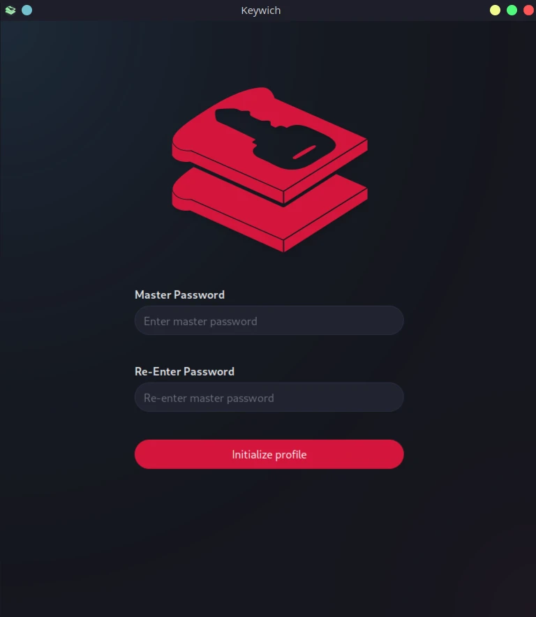

Introduction

Keywich is a password generator application built with Rust, SvelteKit, Skeleton UI and Tauri. The app does not store generated passwords. Instead, it combines parameters such as the username, domain, and master password with a bit of salt and a hashing algorithm to create reproducible passwords with the specified length and character sets.

Application architecture overview
┌───────────────────┐ ┌──────────────────┐
│ OS Keyring │ │ Profile Database │
│ │ │ │
│ - Master Password │ │ - Charsets │
└─────────┬─────────┘ │ - Domains │
│ │ - Usernames │
│ │ - Tags │
│ └────────┬─────────┘
│ │
└─────────┐ ┌─────────┘
│ │ Input in, password out
▼ ▼ Nothing stored
┌────────────────────────────────────────────┐ ┌───────────────┐
│ Tauri App │ │ CLI App │
└─────────────────────┬──────────────────────┘ └───────┬───────┘
│ │
└───────┐ ┌───────────────────┘
│ │
│ │
▼ ▼
┌───────────────────────────────────────────────────────────────────────────┐
│ Keywich Password │
│ Generator │
└─────────────────────────────────────┬─────────────────────────────────────┘
│
▼
┌────────────────────┐
│ Generated Password │
└────────────────────┘
Installation
See GitHub release page for the all available binaries.
Linux x86_64 (.deb)
-
Download
.debpackage from GitHub release page. -
Use
dpkgto install the package.
dpkg -i keywich_0.1.0_amd64.deb
Linux x86_64 (pkgbuild)
PKGBUILD is created but not added to AUR yet.
-
Download
PKGBUILDfile from GitHub release page. -
Use
makepkgtool to install the package.
makepkg --install
Windows x86_64
Download .msi installer
package and execute it.
From source
Requirements:
- git
- Node.js LTS or higher.
- PnPm
- Rust toolchain
- For Windows, you may need a tool like vcpkg to install libopenssl.
git clone https://github.com/SuperioOne/keywich.git
cd keywich
pnpm install -r
pnpm run build:desktop
# build output dir
cd ./tauri_app/target/release
How to Use
In this section you will learn;
- How to setup profile
- How to create character sets
- Changing application settings
- Managing keys
- Application shortcuts
- Using command line
Setup Profile
Profile database is not initialized when you start the application first time. It asks for your Master Password which is used for generating your passwords and creating an encryption key for the profile database.
If there is already an existing profile database in the application local data, the application will only ask for master password for unlocking the database.
It is important to ensure that your master password is long, random and unique to enhance the security of your generated passwords and profile database

Charsets
The actual generated password is a fixed-size binary blob based on target length 1, which is then converted to text within a given character range by charset. This is useful when a site or application does not allow certain characters.
By default, three character sets are created:
- Numeric
0..9 - Alpha Numeric
a..zA..Z0..9 - Alpha
a..zA..Z
Charset pattern rules
- The order of range and characters do not matter. For example,
_-!a..zA..ZandA..Z_-a..z!will produce the same charset. - Duplicate values and ranges are ignored. For instance,
__A..Z__A..Z__A..Z__is parsed asA..Z_ - The left-hand side of a range should be smaller than the right-hand side. Ranges such as
k..aand9..1are not accepted. - Ranges are case-sensitive. Avoid mixing cases like
A..z.
Example charset pattern with complex symbols:
A..Za..z0..9#-_'`"><)(%.,!$€£*+~:;{}[]&
Example charset pattern with German alphabet:
A..Za..z0..9ÄäÖöẞßÜü
Managing charsets
- Open Settings > Charsets and click the Create button to create a new charset.
- Enter a unique charset name.
- Enter the charset pattern.
- (Optional) Add a description for the charset.
- Confirm.
- New charset will be available when modifying or creating keys.
Deleting a charset and creating a different one with the identical name does not affect existing keys. They will continue using the prior one to prevent any unintended password changes.
Syntax definition
ALPHA_LC = ASCII lowercase characters
ALPHA_UC = ASCII uppercase characters
NUMERIC = ASCII Digits
UTF8 = Any valid UTF8 character
range = (ALPHA_LC".."ALPHA_LC) / (ALPHA_UP".."ALPHA_UP) / (NUMERIC".."NUMERIC)
content =range/UTF8
charset = 1*content
Target length is a key parameter.
Managing Keys
At the Keys page, you can create and pin your keys or delete the existing keys.
Creating a key
- Open Keys page and click the Create button.
- Enter domain for the key which can be a non-URL text like
my_server. - Enter the username for the key.
- Select a charset. If you need a different charset see charsets.
- Choose a password length between
1and64. - (Optional) Add tags for filtering.
- (Optional) Add notes about the key.
- (Optional) Set a custom revision no.
- (Optional) Set an icon for key. Supported formats are
jpegandpng. - Click to Confirm button.
Quick and Advanced Copy
Generate and copy your password to the clipboard via left-clicking the copy button on the keys page, or right-clicking
the copy button to open Advanced Copy menu for additional options like base64 encoding, URI encoded, QR Code and clear
text.
Pinning a key
Pin frequently used keys to home page by clicking star icon in the key list.
Updating a key
To update keys, use the pen icon on the keys page. The Update procedure is identical to creating a new key.
Changing any of the following parameters:
username,domain,revision no,charsetortarget lengthwill change the output password. Only change these values if your intention is to update the password.You can always generate your old password by using your previous parameters.
Deleting a key
To delete a key, simply left-click delete button and confirm on the keys page.
Key Parameters
Domain
The service name. The domain is used for generating password and is case-insensitive.
Username
Identification for who is accessing the service. The username is used for generating password and is case-sensitive.
Revision no
Password seed number. Changing this value will result in a new password being generated.
If you ever need to update your password for same username, simply increment or change this value.
Target length
The desired password length. Currently supports maximum 64 characters. Changing this value will result in a new password being generated.
Charset
Defines the range of characters used in generating the output password. For more information, see the charsets page.
Tags
Used for filtering keys.
Notes
Additional descriptive text for the key.
Icon
An icon representing the key that will be displayed in the Pinned Keys and Key List.
Settings
You can change the application theme and language via Settings page.
Currently, there are 11 color theme mainly from SkeletonUI and 2 language option (EN, TR).
All configurations are stored in config.json, located at:
/home/${USER}/.local/share/com.superiorone.keywich/config.jsonfor Linux.C:\Users\${USER}\AppData\Local\com.superiorone.keywich\config.jsonfor Windows.
Here's an example of a config.json file:
{
"color_theme": "default",
"locale": "en",
"is_light_theme": false
}
Shortcuts
General:
Ctrl+1: Open home page.Ctrl+2: Open keys list.Ctrl+3: Open settings.Ctrl+L: Lock/Logout.Ctrl+I: Log panel.
Keys page:
Ctrl+S: Open/Close key filter.Ctrl+N: Create new key.
Current version does not have configurable shortcuts.
CLI
The password generator can be also accessed via the command-line interface (CLI) for general-purpose usage or when you
don't have access to your graphical desktop environment. To view CLI command and options details use keywich --help.
Current version is limited with password generator only. It does not have access to your profile database.
Usage: keywich generate [OPTIONS] --domain <DOMAIN> --charset <CHARSET> --username <USERNAME>
--target-length <TARGET_LENGTH>
Options:
-d, --domain <DOMAIN> Domain for password
-c, --charset <CHARSET> Password character set
-u, --username <USERNAME> Username for password
-t, --target-length <TARGET_LENGTH> Password target length
-p, --password <PASSWORD> Password
-o, --output-type <OUTPUT_TYPE> Password output type [default: text] [possible values:
phc, text, base64, json, qr]
--revision <REVISION> Seed number [default: 0]
-h, --help Print help
Examples:
keywich generate -d myserver -u admin -t 6 -c A..Za..z0..9 -p pass12345 -o base64
# a3J5Tmlh
keywich generate -d myserver -u admin -t 6 -c A..Za..z0..9 -p pass12345 -o text
# kryNia
keywich generate -d myserver -u admin -t 6 -c A..Za..z0..9 -p pass12345 -o phc
# $kw_scrypt$v=v1$kryNia